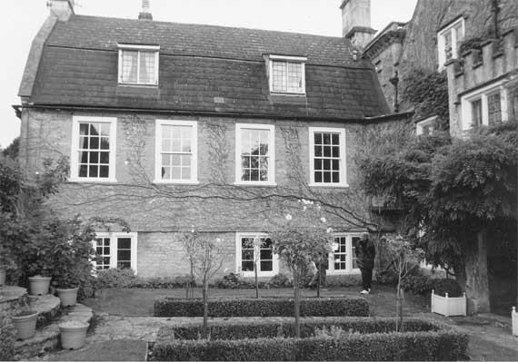

Type of building:
Former north wing of a small country house (now a separate dwelling)
Listing:
Grade ll
Plan and elevation:
Single pile, two units. 2-storey with attics dormers. Plus a 2-storey extension
Summary of the probable main building
history:
Early 17th Century. Late 17th Century alterations. Major modifications in the
late 18th Century. Extended mid 19th Century.

South elevation
Exterior:
South elevation of coursed rubble construction. The ground floor is lit by two
three-light mullion windows and one two-light mullion window. The window openings
are generally fitted with metal casements although small 4 over 4 sash windows
have been fitted in the centre of each of the three-light mullions. All mullions
are ogee moulded. There is a continuous string course over the ground floor
windows. Four 6 over 6 sash windows with thick glazing bars and dressed stone
surrounds light the first floor. Mouldings are under the window sills. There
are two dormer windows in the attic. The mansard (gabled gambrel) roof is slated
with stone copings resting on moulded kneelers. Two ashlar chimney stacks are
at the gable ends.
An extension at right angles to the north is built over a carriage entrance and a separate foot entrance spanned by an oak beam to support accommodation above. The extension is of ashlar construction with one 6-over-6 sash window in a beaded stone surround. The slated mansard roof has two dormers. The left party wall of this extension is the wall of another building otherwise demolished but with surviving blocked mullion windows and a blocked entry.
Interior:
On the ground floor there are two stone fireplaces - one a four centred arched
and moulded fireplace with stops, the other a wide fireplace with deep chamfers.
South windows are ogee section mullions ( two- light and three-light) with window
seats. One high north facing window is a two-light mullion of ovolo section.
First floor rooms have four-fielded panelled doors, some with brass door locks.
Drawing room has dentile cornicing. Seats are under the sash windows. The attic
rooms have planked doors with iron strap hinges and catches and one bolection
moulded stone fireplace (possibly inserted). There is evidence of former entries
into the neighbouring property (BE 037).
Date & development:
The property is a former wing of an old clothiers house (BE 037). It is likely
that the ground floor area of the property was originally a separate property
of early 17th Century date, built into an east-west slope and then being of
a single pile and two unit plan and on one or, possibly, 1 1/2 storeys. Eventually
incorporated into BE 037, possibly as a separate service area to the main house,
it was modified in the late 17th Century. The fireplaces and mullions of different
periods are not inconsistent with this interpretation.
The first floor area and mansard roof, however, are of a much later period and it is suggested that these are the results of a major reconstruction in the late 18th Century to update BE 037 and provide the occupants with a fashionable first floor drawing room with servants quarters in the attic.
The extension with its carriage entrance and accommodation above of ashlar construction is likely to date from the mid 19th Century.
References
- Victoria Art Gallery - Mowbray Green photographic collection
Reference Pictures
| North extension with carriage entrance.
View from the road |
North extension with carriage entrance.
View from “Dyehouse Lane” |
Survey Drawings
| Ground Plan |
Section |
Images from the Archives
| |